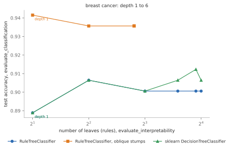
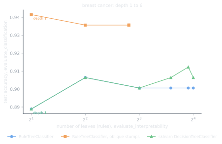

Evaluating the models#
RuleTree.evaluation computes the usual metrics of a model in one call, each as a dictionary
{metric name: value}, so that the results of several models can be collected in a table. The
metrics are the ones of sklearn.metrics, with a few conventions described below.
What each function needs#
Most of the functions look only at the output of a model (its predictions, its clusters) and
not at the model itself: they evaluate a RuleTree, a scikit-learn model or any other model, and
also outputs computed elsewhere. Only evaluate_interpretability reads the structure of the
model, so it works only with trees.
Function |
Input |
Applies to |
|---|---|---|
true and predicted classes; optionally the class probabilities |
any classifier (only its output) |
|
true and predicted values |
any regressor (only its output) |
|
known classes and cluster labels |
any clustering, or any partition of the instances (only its output) |
|
the data and the cluster labels |
any clustering (its output and the data) |
|
the group of each instance and its sensitive attribute |
any partition: clusters, predicted classes, leaves of a tree (only the output) |
|
the fitted model |
RuleTree trees and scikit-learn decision trees (their structure); an empty dictionary for other models |
The trees of RuleTree have more tools to inspect a model, described in Reading the tree: the
rules (get_rules), the leaf of each instance (apply, which gives the partition to pass to
evaluate_fairness), the contributions of the features to each prediction
(local_interpretation) and the balance of the splits (get_balanced_stumps).
Classification#
evaluate_classification(y_true, y_pred, y_proba=None, labels=None) takes the true and the
predicted classes and, optionally, the class probabilities with the order of their columns
(labels, e.g. the classes_ of the model):
from sklearn.datasets import load_diabetes, load_iris
from sklearn.model_selection import train_test_split
from RuleTree import RuleTreeClassifier, RuleTreeRegressor
from RuleTree.evaluation import evaluate_classification, evaluate_regression
X, y = load_iris(return_X_y=True)
X_train, X_test, y_train, y_test = train_test_split(X, y, test_size=0.3, random_state=0, stratify=y)
model = RuleTreeClassifier(max_depth=3, random_state=0).fit(X_train, y_train)
scores = evaluate_classification(y_test, model.predict(X_test), model.predict_proba(X_test),
labels=model.classes_)
print(sorted(scores))
print({name: round(scores[name], 3) for name in ["accuracy", "f1_macro", "roc_macro"]})
['accuracy', 'average_precision_macro', 'average_precision_micro', 'average_precision_weighted', 'balanced_accuracy', 'f1_macro', 'f1_micro', 'f1_score', 'f1_weighted', 'precision_macro', 'precision_micro', 'precision_score', 'precision_weighted', 'recall_macro', 'recall_micro', 'recall_score', 'recall_weighted', 'roc_macro', 'roc_micro', 'roc_weighted']
{'accuracy': 0.956, 'f1_macro': 0.955, 'roc_macro': 1.0}
The metrics are:
accuracyandbalanced_accuracy(the mean of the recall of each class, which does not favor the frequent classes);f1,precisionandrecall, each with three averages over the classes:micro(computed on all the instances together, equal to the accuracy for single-label problems),macro(the mean over the classes, each with the same weight) andweighted(the mean weighted by the number of instances of each class);f1_score,precision_scoreandrecall_score: for a binary problem, the ones of the positive class, the last oflabels(by default, the largest class ofy_true); for more classes, the micro averages. A class never predicted has precision 0 (instead of an undefined value);only with
y_proba:roc_*(area under the ROC curve) andaverage_precision_*, with the same three averages. For a binary problemy_probacan also be the probability of the positive class alone. These metrics are nan, with a warning, wheny_truehas a single class.
Since the function uses only the output, the same call evaluates any classifier, e.g. a logistic regression on the same split:
from sklearn.linear_model import LogisticRegression
logistic = LogisticRegression(max_iter=1000).fit(X_train, y_train)
for name, classifier in [("RuleTree", model), ("logistic regression", logistic)]:
scores = evaluate_classification(y_test, classifier.predict(X_test), classifier.predict_proba(X_test),
labels=classifier.classes_)
print(f"{name}: accuracy {scores['accuracy']:.3f}, balanced accuracy {scores['balanced_accuracy']:.3f}, "
f"ROC AUC {scores['roc_macro']:.3f}")
RuleTree: accuracy 0.956, balanced accuracy 0.956, ROC AUC 1.000
logistic regression: accuracy 1.000, balanced accuracy 1.000, ROC AUC 1.000
Regression#
evaluate_regression(y_true, y_pred) gives the explained variance and the errors:
X_reg, y_reg = load_diabetes(return_X_y=True)
X_reg_train, X_reg_test, y_reg_train, y_reg_test = train_test_split(X_reg, y_reg, test_size=0.3, random_state=0)
regressor = RuleTreeRegressor(max_depth=3, random_state=0).fit(X_reg_train, y_reg_train)
scores = evaluate_regression(y_reg_test, regressor.predict(X_reg_test))
print({name: round(value, 3) for name, value in scores.items()})
{'r2': 0.188, 'explained_variance': 0.199, 'max_error': 213.939, 'mean_absolute_error': 50.408, 'mean_squared_error': 4141.577, 'median_absolute_error': 40.783, 'mean_absolute_percentage_error': 0.428, 'mean_squared_log_error': 0.2}
r2andexplained_variance: 1 for perfect predictions, 0 for the constant prediction of the mean, negative for worse predictions;max_error,mean_absolute_error,mean_squared_errorandmedian_absolute_error: in the unit of the target (squared for the mean squared error);mean_absolute_percentage_error: relative to the true values, so it becomes huge when some true values are close to 0;mean_squared_log_error: defined only for non-negative values, nan otherwise.
With several targets, multioutput sets how the metric of each target is combined, as in
sklearn.metrics: "uniform_average" (the default, the mean), "raw_values" (an array
with the value of each target) or an array of weights. max_error, which scikit-learn computes
only for one target, is the largest error of each target, combined in the same way.
Clustering#
evaluate_clustering(labels_true, labels_pred) compares the clusters with known classes
(external metrics); evaluate_clustering_internal(X, labels) measures their quality from the data
alone (internal metrics). Both ignore the names of the clusters: only which instances are together
matters.
from sklearn.cluster import KMeans
from sklearn.datasets import make_blobs
from RuleTree import RuleTreeCluster
from RuleTree.evaluation import evaluate_clustering, evaluate_clustering_internal
X_blobs, blobs = make_blobs(n_samples=300, centers=3, cluster_std=0.5, random_state=0)
clusterings = {
"RuleTreeCluster": RuleTreeCluster(max_depth=3, random_state=0).fit_predict(X_blobs),
"k-means": KMeans(n_clusters=3, n_init=10, random_state=0).fit_predict(X_blobs),
}
for name, labels in clusterings.items():
external = evaluate_clustering(blobs, labels)
internal = evaluate_clustering_internal(X_blobs, labels)
print(f"{name}: {len(set(labels.tolist()))} clusters, adjusted Rand {external['adjusted_rand']:.3f}, "
f"silhouette {internal['silhouette_score']:.3f}, Davies-Bouldin {internal['davies_bouldin']:.3f}")
RuleTreeCluster: 5 clusters, adjusted Rand 0.950, silhouette 0.592, Davies-Bouldin 0.415
k-means: 3 clusters, adjusted Rand 1.000, silhouette 0.717, Davies-Bouldin 0.399
The external metrics are 1 when the clusters are the classes:
adjusted_randandadjusted_mutual_infoare corrected for chance: about 0 for random clusters (and possibly negative);rand_score,mutual_infoandnormalized_mutual_infoare not corrected: random clusters get positive values, which grow with the number of clusters;homogeneity(each cluster has a single class),completeness(each class is in a single cluster) and their harmonic meanv_measure;fowlkes_mallows: the geometric mean of the precision and the recall of the pairs of instances put together.
The internal metrics are:
silhouette_score, between -1 and 1, the higher the better: how much closer each instance is to its cluster than to the nearest other one;calinski_harabasz, the higher the better: the ratio between the dispersion between the clusters and within them;davies_bouldin, the lower the better (0 at best): the mean similarity of each cluster with the most similar other one.
They are nan with a single cluster. With metric="precomputed", X is a matrix of distances
and only the silhouette is computed; with another metric, the silhouette uses that distance,
the other two metrics the euclidean distance.
Fairness#
evaluate_fairness(labels, sensitive_attribute, ideal_distribution=None) measures how the values
of a sensitive attribute are distributed among the groups of a partition: clusters, predicted
classes, or the leaves of a tree. Let \(p(a)\) be the fraction of the instances with value
\(a\) of the attribute, and \(p(a \mid g)\) the same fraction within the group \(g\):
balanceis \(\min_{a, g} \min\left(\frac{p(a)}{p(a \mid g)}, \frac{p(a \mid g)}{p(a)}\right)\), between 0 and 1: 1 when every group has the distribution of the whole data set, 0 when a group lacks a value (e.g. a group of one instance);max_fairness_costis \(\max_g \frac{1}{|A|} \sum_a \left|p(a \mid g) - \pi(a)\right|\), where \(\pi\) isideal_distribution(by default, the distribution of the whole data set) and \(|A|\) the number of values of the attribute: 0 when every group has the ideal distribution.
Here the groups are the three blobs, with a sensitive attribute drawn at random, and with one that depends on the position of the instances:
import numpy as np
from RuleTree.evaluation import evaluate_fairness
random_attribute = np.random.default_rng(0).integers(0, 2, size=len(blobs))
position_attribute = (X_blobs[:, 0] > np.median(X_blobs[:, 0])).astype(int)
print({name: round(value, 3) for name, value in evaluate_fairness(blobs, random_attribute).items()})
print({name: round(value, 3) for name, value in evaluate_fairness(blobs, position_attribute).items()})
{'balance': 0.913, 'max_fairness_cost': 0.043}
{'balance': 0.0, 'max_fairness_cost': 0.5}
With the leaves of a tree as groups (apply), the function measures whether the rules of the
tree treat the values of the attribute alike. Here a tree on the diabetes data, whose second
feature is the sex of the patients:
sex = X_reg_train[:, 1] > 0
leaves = regressor.apply(X_reg_train)
print(len(set(leaves.tolist())), "leaves:",
{name: round(value, 3) for name, value in evaluate_fairness(leaves, sex).items()})
8 leaves: {'balance': 0.592, 'max_fairness_cost': 0.195}
See also
To build trees that take a sensitive attribute into account, see the fair stumps in Choosing the splits: stumps.
Size of the trees#
evaluate_interpretability(model) measures how long the rules of a tree are:
n_leaves: the number of leaves, i.e. of rules;n_internal_nodes: the number of splits;max_depth: the number of conditions of the longest rule (the root has depth 0).
It reads the structure of the model, so it works with the trees of RuleTree and with the decision trees of scikit-learn (for comparisons), and returns an empty dictionary for other models:
from sklearn.tree import DecisionTreeClassifier
from RuleTree.evaluation import evaluate_interpretability
print(evaluate_interpretability(model))
print(evaluate_interpretability(DecisionTreeClassifier(random_state=0).fit(X_train, y_train)))
print(evaluate_interpretability(logistic))
{'n_leaves': 5, 'n_internal_nodes': 4, 'max_depth': 3}
{'n_leaves': 8, 'n_internal_nodes': 7, 'max_depth': 4}
{}
The size of the rules counts as much as their accuracy: combining the two functions gives the trade-off of a family of models. With oblique stumps, a tree with two leaves is more accurate than axis-parallel trees with sixteen:




Test accuracy (evaluate_classification) and number of leaves (evaluate_interpretability)
of trees of depth 1 to 6 on the standardized breast cancer data (see docs/make_figures.py).#
Comparing models#
Since every function returns a dictionary, the evaluation of several models is a list of rows,
e.g. for a pandas.DataFrame. The columns of evaluate_interpretability are simply missing
for the models that are not trees. Here on the breast cancer data, standardized for the oblique
stumps and the logistic regression:
import pandas as pd
from sklearn.datasets import load_breast_cancer
from sklearn.preprocessing import StandardScaler
from RuleTree.stumps.classification import ObliqueDecisionTreeStumpClassifier
X_bc, y_bc = load_breast_cancer(return_X_y=True)
X_bc_train, X_bc_test, y_bc_train, y_bc_test = train_test_split(StandardScaler().fit_transform(X_bc), y_bc,
test_size=0.3, random_state=0, stratify=y_bc)
candidates = {
"RuleTree": RuleTreeClassifier(max_depth=3, random_state=0),
"RuleTree, oblique stumps": RuleTreeClassifier(max_depth=3, random_state=0,
base_stumps=ObliqueDecisionTreeStumpClassifier("bivariate")),
"sklearn tree": DecisionTreeClassifier(max_depth=3, random_state=0),
"logistic regression": LogisticRegression(max_iter=1000),
}
rows = []
for name, candidate in candidates.items():
candidate.fit(X_bc_train, y_bc_train)
scores = evaluate_classification(y_bc_test, candidate.predict(X_bc_test))
rows.append({"model": name, "accuracy": round(scores["accuracy"], 3),
"f1_score": round(scores["f1_score"], 3)} | evaluate_interpretability(candidate))
print(pd.DataFrame(rows).convert_dtypes().to_string(index=False))
model accuracy f1_score n_leaves n_internal_nodes max_depth
RuleTree 0.901 0.919 8 7 3
RuleTree, oblique stumps 0.936 0.948 7 6 3
sklearn tree 0.901 0.919 8 7 3
logistic regression 0.959 0.967 <NA> <NA> <NA>